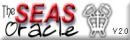

| |
 |
The SEAS Oracle has a vast amount of information about academics
here at the Fu Foundation School of engineering and Applied Science.
This site contains the largest compilation of Columbia Course/ Professor
information. You'll learn useful and interesting facts about professors
and courses, including background, research, education and more.
You'll also see the results of those course evaluations you fill
out every semester.
|